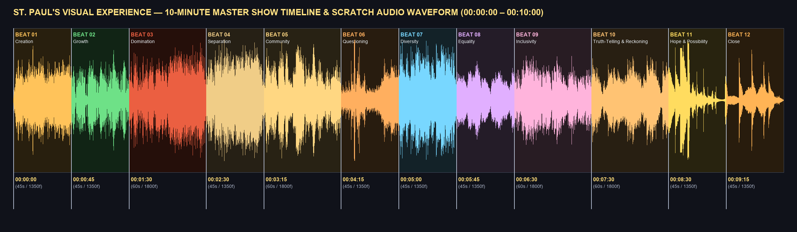
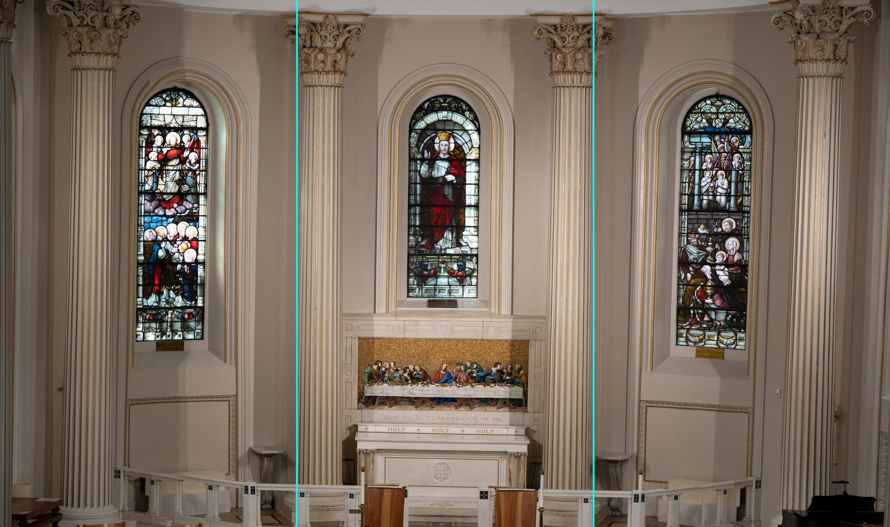
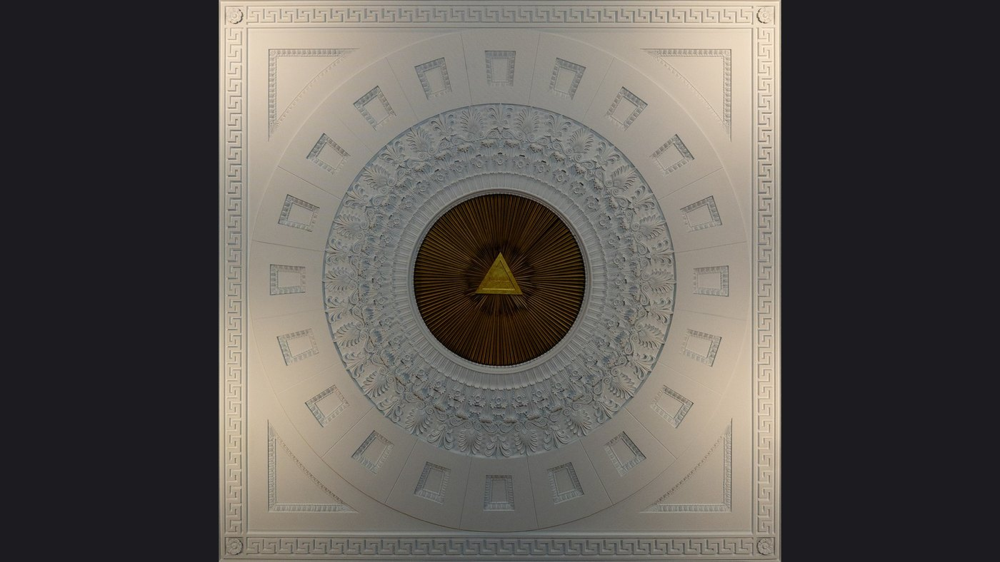
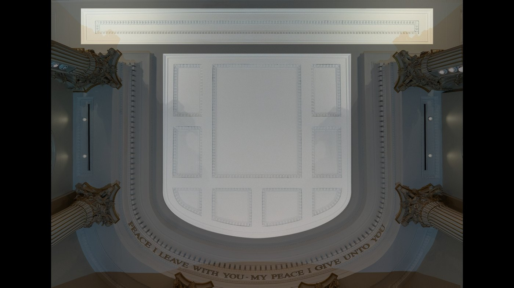

🎬 Assembled Geometry-Locked Motion Loops (VV Loop Assembler + Flow Suites)
6 multi-beat architectural loops with St. Paul’s exact sanctuary geometry baked in (100% PASS seam verification via VV Flow Long Loop Assembler).
Loop 01 — Zone 2 Center Medallion: Genesis, Willow, Gold Triangle & Interfaith (16:9)
Concentric plaster rings (`r=166, 346, 518px`), 20 radial mini-coffers, and the Sacred Gold Triangle (`Tetragrammaton`) rotating & pulsing across Beats 01 → 02 → 06 → 07.
Loop 02 — Zone 2 Center Medallion: Equality, Quilt, Butterflies & Lanterns (16:9)
Central Park Imagine mosaic, stitched AIDS Memorial Quilt & Bargello embroidery, Monarch butterflies, and sky lanterns converging toward the Gold Triangle (Beats 08 → 09 → 11 → 12).
Loop 03 — Zone 3 Far Ceiling Vault & Beam: Creation, Willow, Press & Community (16:9)
Squared U-shaped coffered vault (`Center Large Coffer` + `8 Perimeter Coffers` + `Top Horizontal Beam`) transitioning from JWST Nebula to Tiffany Skylights & Civil Rights (Beats 01 → 02 → 04 → 05).
Loop 04 — Zone 3 Far Ceiling Vault & Beam: Quilt, Morris Tapestry, Mosaic & Lanterns (16:9)
Golden structural coffer ribs frame stitched quilt blocks, William Morris botanical tapestries, Byzantine gold mosaic tesserae, and floating lanterns (Beats 09 → 10 → 11 → 12).
Loop 05 — Zone 1B Backdrop Center Slice: Arch Window, Altar & Tiffany Mosaic (9:16 Vertical)
Vertical `720×1280` (`9:16`) slice locked to the Center Stained-Glass Arch, White Marble Reredos, inner Corinthian columns, and golden Tiffany Last Supper mosaic (Beats 01 → 02 → 03 → 11).
Loop 06 — Zone 1 Full Chancel Backdrop Wall: 4 Columns, 3 Arches & Mosaic (16:9 Master)
Full sanctuary wall across all 4 Corinthian columns and 3 stained-glass windows transitioning from Cosmic Creation to Living Weeping Willow, Needlepoint Tapestry, and Floating Lanterns.
1. 10-Minute Master Show Timeline & Stereo Scratch Audio Track
Click any beat below to jump the audio player directly to that beat’s timecode (`00:00:00` – `00:10:00`, `18,000 frames @ 30fps`).

2. Architectural Projection Templates, Alpha Masks & RGB ID Mattes
All templates are 1:1 square-pixel aspect ratio (zero stretching) with pre-cut PNG alpha/luma masks and line-art overlays.

Zone 1: Chancel Backdrop Wall (3× 9:16 Vertical Slices)
- Master Working Canvas:
3240 × 1920(plus6480 × 38406K master) - Slice 1 (Left 9:16):
1080 × 1920(x: 0–1080, Left Columns & Arch Window) - Slice 2 (Center 9:16):
1080 × 1920(x: 1080–2160, Center Arch, Marble Reredos & Tiffany Last Supper Mosaic) - Slice 3 (Right 9:16):
1080 × 1920(x: 2160–3240, Right Arch Window & Column) - Pre-Cut Masks Included: Walls Only (
Mask_01), 3 Stained-Glass Windows (Mask_02), Tiffany Mosaic (Mask_03), Marble Reredos (Mask_04), 4 Corinthian Columns (Mask_05), Line-Art & RGB ID Matte.

Zone 2: Center Ceiling Medallion (16:9 Full-Height Centered)
- Working & 4K Canvases:
1920 × 1080(1080p) &3840 × 2160(4K UHD) - Active Square Medallion:
1080 × 1080centered atx: 420–1500(cx=960, cy=540) - Concentric Ring Masks Included: Full Circular Dome (
Mask_01,r ≤ 518px), Center Gold Triangle / Tetragrammaton (Mask_02), Inner Sunburst Core (Mask_03,r ≤ 166px), Ornate Acanthus Ring (Mask_04,r: 166–346px), Outer 20-Coffer Wheel (Mask_05,r: 346–518px), and Greek Key Spandrels (Mask_06).

Zone 3: Far Ceiling Chancel Vault & Beam (16:9 Squared)
- Working & 4K Canvases:
1920 × 1080(1080p) &3840 × 2160(4K UHD) - Perspective-Rectified: Top Beam leveled to
0.0 pxhorizontal error; vertical coffer stiles plumb; centered atx = 960. - Pre-Cut Masks Included: Top Horizontal Classical Beam (
Mask_01), Full U-Shaped Coffer Vault (Mask_02), Center Large Square Coffer (Mask_03), 8 Perimeter Coffers (Mask_04), Structural Coffer Ribs & Stiles Only (Mask_05), Line-Art & RGB ID Matte.
3. 12-Beat Multi-Surface Visual Styleframes & Concept Mockups
Click any board to inspect full-screen, play that beat's audio cue, or open its curated public-domain assets folder.
4. Master 12-Beat / 72-Shot Production Schedule & Asset Links
Each beat has 6 pre-registered canvas outputs (Full 3240×1920 Backdrop, Left/Center/Right 9:16 Slices, Center Medallion, and Far Ceiling Vault).
| Beat | Timecode (30fps) | Dur / Frames | Zone 1: Chancel Backdrop (3240×1920 & 3× 9:16) | Zone 2: Center Medallion (1920×1080) | Zone 3: Far Ceiling Vault (1920×1080) | Source Assets |
|---|